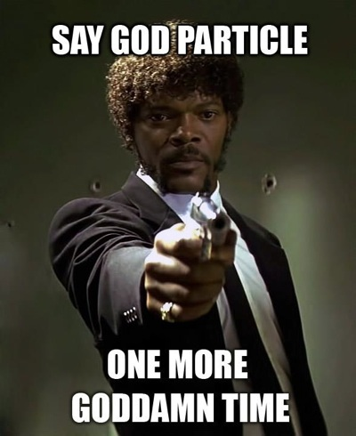

La (cuasi) Partícula de Majorana
Mucha atención ha tenido el descubrimiento del Bosón de Higgs, la mal llamada Partícula de Dios.

Pero hace unos meses se comprobó un efecto que nos trae de vuelta a uno de los personajes favoritos de este blog: Ettore Majorana.
Recordarán la historia de Majorana, ¿cierto? ¿no?
Bueno, para todos ustedes niñitos con deficit atencional, acá va de nuevo (en modo resumido):
Ettore Majorana era un joven y brillante físico italiano, discípulo de Enrico Fermi, considerado uno de los más brillantes físicos de su tiempo, admirado por todos, que desapareció misteriosamente el 25 de marzo de 1938, cuando aborda un barco y nunca más se supo de él. Sus ideas eran tan avanzadas para su tiempo que recién unos 20 años después el premio Nobel Richard Feynmann re descubrió y reformuló varias de sus ideas y pudieron ser entendidas por el resto de la comunidad científica. La leyenda dice que ha sido visto en Argentina en la década de los 50 donde habría ejercido como humilde ingeniero. Hay más detalles misteriorosos sobre los que escribí en esta entrada, así que vayan y léanla con atención yo los espero aquí.
(Pausa para que lean sobre Majorana.….)

Ettore Majorana
Bien, resulta que este joven científico predijo la existencia de una partícula conocida como el Fermión de Majorana. En física de partículas tenemos los Bosones y los Fermiones. Los Fermiones cumplen con el Principio de Exclusión de Pauli, los Bosones no, esto es un tanto complicado y se los explico otro día, ¿vale?
Pues bien, Majorana predijo que deben existir una clase de fermiones que cumplen con la característica de ser ellos mismos sus propias antipartículas (ya saben, los electrones tienen un anti electrón, conocido como positrón, en el caso de los fermiones de Majorana la anti partícula es la misma). Hasta ahora nadie ha podido encontrar un fermión de Majorana, aunque sospechan que los neutrinos puedan ser uno, lo que es una buena excusa para seguir ocupando esa maquinota que tenemos en el CERN, o gastarse otros miles de millones de euros en otra, vamos a ver que pasa... :)
Ah, pero todo eso es muy complicado.
Lo importante es que si bien no han encontrado fermiones de Majorana, si se ha logrado producir cuasi particulas con sus propiedades en ambientes superconductores, lo que permitiría desarrollar computadores cuánticos (no cuáticos, cuánticos).
Y como yo se que a muchos de ustedes los vuelve loco esto de los
computadores cuáticos cuánticos, les dejo esta charla de Roman
Lutchyn en Microsoft Research sobre Computación Cuántica Topológica
usando Fermiones de Majorana (¡chanfle!)
Esta charla es de septiembre de 2011, en abril de 2012 se pudo verificar la existencia de estas cuasi partículas, así que ya existe factibilidad para este tipo de computación, es cosa de tiempo...